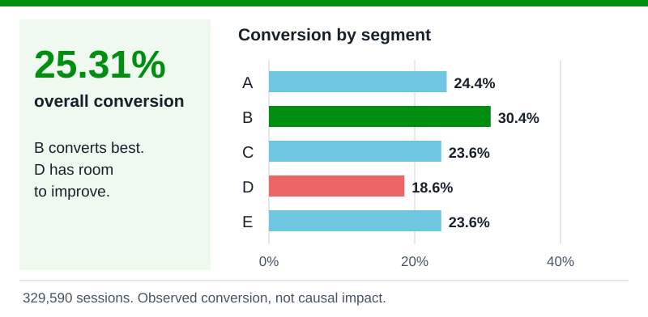
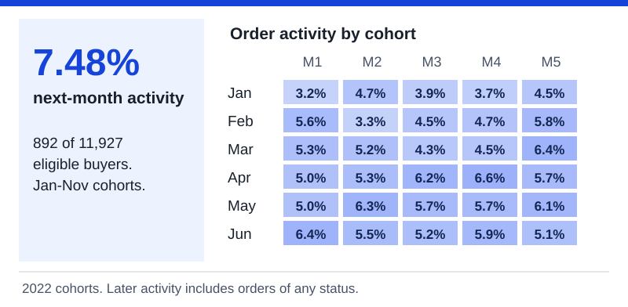
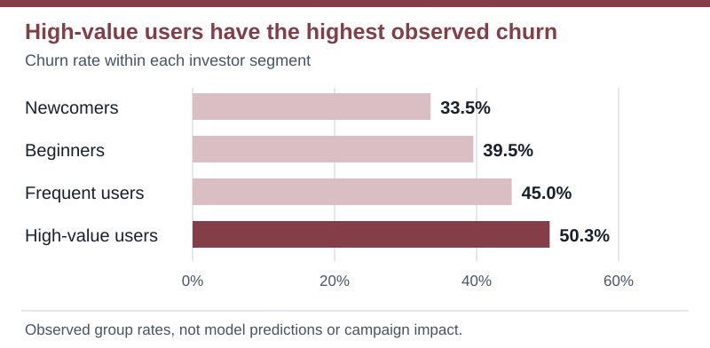
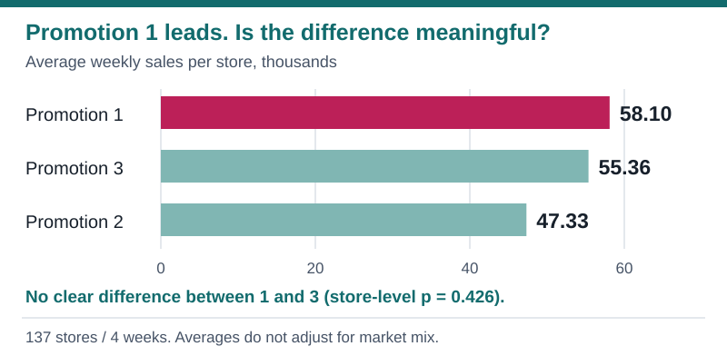
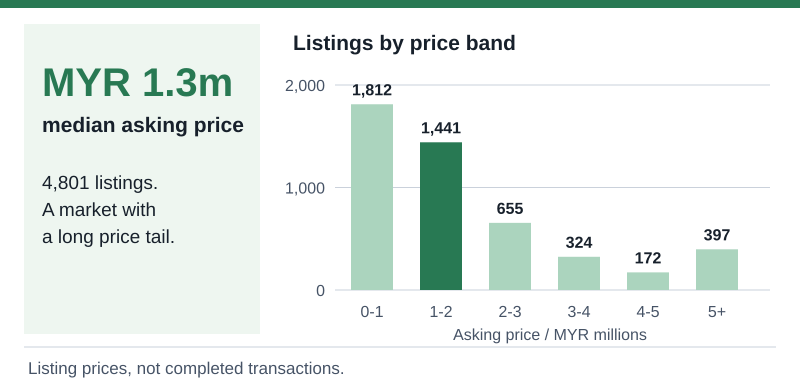
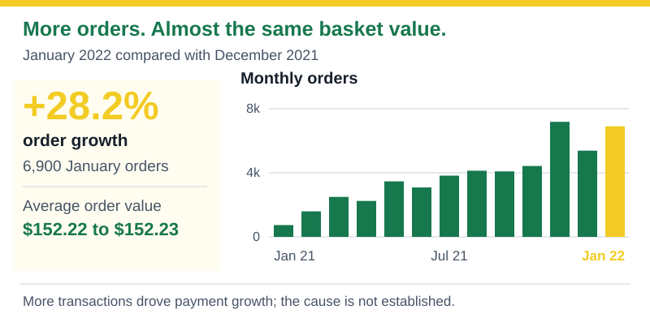
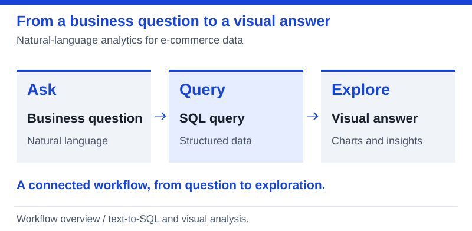

Customer Conversion Prediction

What makes a customer place an order? Exploring conversion, retention, and the signals behind both.
Python · XGBoost · SHAP
Explore project
Hi, I'm

I'm a data analyst with a focus on business intelligence and machine learning. I enjoy finding patterns, asking better questions, and turning an analysis into something people can actually use.
My projects move between customer behavior, experiments, investment decisions, and e-commerce. The common thread is curiosity: what is happening, why does it matter, and what should we do next?
I'm also interested in what comes next for data work, from geospatial analysis and data engineering to AI agents that help people explore information.
Turn source data into analysis-ready models with SQL transformations, dimensional modeling, and data quality checks.
Translate business questions into clear KPIs, executive dashboards, and reporting that supports decisions.
Explore customer behavior, build segmentation and prediction models, and explain the factors behind their outputs.
Connect language models with retrieval, tools, and structured workflows for question answering and data analysis.
Build repeatable data workflows through extraction, transformation, orchestration, and reliable reporting datasets.
Explore how location adds context to business questions through spatial patterns, geographic data, and map-based analysis.

What makes a customer place an order? Exploring conversion, retention, and the signals behind both.

Following customers from acquisition to return visits, and finding where product growth really comes from.

Connecting investor behavior, churn risk, and campaign economics to make a limited budget work harder.

Separating promising results from meaningful differences across three restaurant promotions.

Exploring property listings to understand the features behind prices and the opportunities behind the numbers.

Turning Brazilian e-commerce data into an executive view of sales, customers, and operational performance.

An AI agent that turns business questions into SQL queries and visual insights from e-commerce data.
Course title & completion date
Course title & completion date
Course title & completion date
Course title & completion date
Course title & completion date
Course title & completion date
Course title & completion date